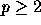

| Double Trouble |
The secret service of Hudonia has always had a strong appetite for strange numbers. This appetite seemed strongest when Hudonia was in trouble. The numbers they were looking for had the following property. Whenever you would right-rotate the number (that is, take away the last digit and put it in front of the number), you would end up with double the original number. Numbers possessing this property were called double-trouble numbers. For example, X = 421052631578947368 is a double-trouble number, since 2X = 842105263157894736 which is a right rotation of X.
The number X is a double-trouble number in the number system with base 10. Any number system with base  , however, has many such double-trouble numbers. In the binary number system (base p = 2), for example, we have the double-trouble numbers 01 and 0101. Notice that the leading zeros are necessary here in order to obtain the proper number after right rotation.
The secret service seemed to like the smallest double-trouble numbers in a number system most. For example, in the binary number system the smallest double-trouble number is 01. In the decimal (p = 10) number system, the smallest double-trouble number is 052631578947368421. Being a patriotic Hudonian, you are asked to write a program that computes for a given base p of a number system the smallest double-trouble number in that system.
The input file consist of a sequence of numbers, one per line, ended by end-of-file. Each number is less than 200.
The output file consists of, for each number p in the input file, the smallest double-trouble number (including any necessary leading zeros) in the number system with base p. The double-trouble numbers are given in the format analogous to the example below and in the same order as in the input file.
No blank line should appear at the end of the output. Digits in a base-p number system are given in decimal representation, and each digit (including the last one) is followed by a single space.
2 10 35
For base 2 the double-trouble number is 0 1 For base 10 the double-trouble number is 0 5 2 6 3 1 5 7 8 9 4 7 3 6 8 4 2 1 For base 35 the double-trouble number is 11 23